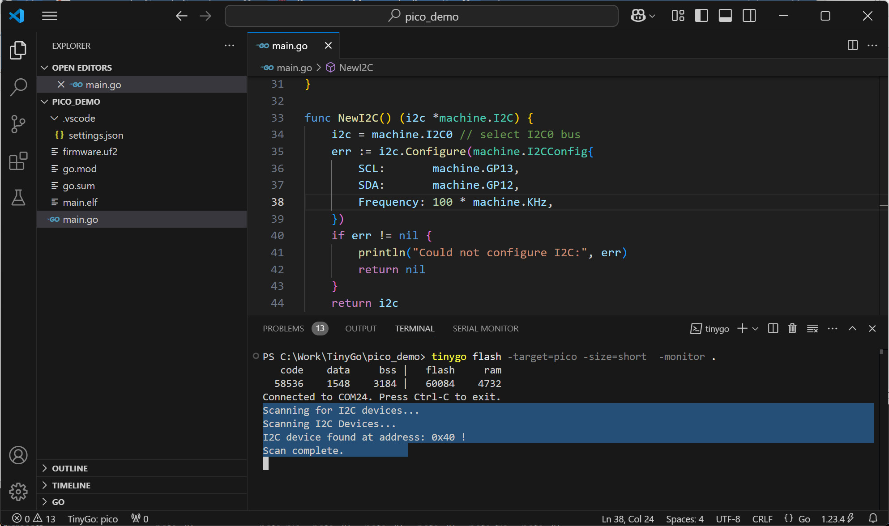

แนะนำการใช้งาน TinyGo สำหรับบอร์ด Raspberry Pico (ตอนที่ 2)#
Keywords: Go / TinyGo, Microcontroller Programming, Raspberry Pico, RP2040, Arduino
▷ TinyGo vs. Arduino C/C++#
บทความในตอนที่ 2 จะนำเสนอการเปรียบเทียบรูปแบบการเขียนโค้ดด้วยภาษา Go / TinyGo (ทดลองใช้เวอร์ชัน v0.35.0) และโค้ดที่เขียนด้วย Arduino C/C++ โดยใช้ Arduino Core for RP2040 (ลองใช้เวอร์ชัน v4.4.1) ดังนั้นอาจช่วยให้ผู้อ่านที่เคยใช้งาน หรือคุ้นเคยกับการเขียนโค้ดด้วย Arduino Sketch มาบ้างแล้ว เห็นความแตกต่างระหว่างทั้งสองภาษาได้ง่ายขึ้น
รูป: Arduino IDE + Arduino Core for RP2040
▷ ตัวอย่างที่ 1: LED Blink#
ตัวอย่างแรกสาธิตการเขียนโค้ดเพื่อทำให้ LED ที่ขา GP25 ของบอร์ด Pico RP2040 กระพริบ โดยเขียนค่าเอาต์พุตและสลับค่าลอจิกทุก ๆ 100 มิลลิวินาที และใช้วิธีหน่วงเวลาก่อนทำคำสั่งถัดไป การเขียนโค้ดด้วย Arduino Sketch ก็มีตัวอย่างดังนี้
#include <Arduino.h>
void setup() {
Serial.begin(115200);
while (!Serial) { delay(10); } // Wait for the Serial port to open
Serial.println("Arduino on Pico-RP2040 Board");
pinMode(LED_BUILTIN, OUTPUT);
}
void loop() {
int state = !digitalRead(LED_BUILTIN);
digitalWrite( LED_BUILTIN, state );
Serial.println( String("LED: ") + state );
delay(100);
}
ข้อสังเกต: การทำคำสั่ง while (!Serial) { delay(10); } จะส่งผลให้โปรแกรมหยุดรอก่อนจนกว่าผู้ใช้จะเปิดใช้งาน
USB-CDC / Serial ของบอร์ด เช่น เปิดพอร์ตโดยใช้ Arduino Serial Monitor หลังจากโปรแกรมในฮาร์ดแวร์เริ่มทำงาน
ถ้าเขียนโค้ดสำหรับ TinyGo ก็มีตัวอย่างดังต่อไปนี้
package main
import (
"machine"
"time"
)
func main() {
for { // Wait until the USB-CDC is open.
if machine.USBCDC.DTR() {
break
}
time.Sleep(10 * time.Millisecond)
}
println("TinyGo on Pico-RP2040 Board")
led := machine.LED // or machine.GP25
led.Configure( machine.PinConfig{Mode: machine.PinOutput} )
for { // an endless loop
state := !led.Get() // Toggle the state
println( "LED:", state ) // Send output string to serial
led.Set( state ) // Update the LED output
time.Sleep( 100*time.Millisecond ) // Wait for 0.1 sec
}
}
machine.LED มีชนิดข้อมูลเป็น machine.Pin และเป็นส่วนหนึ่งของแพ็กเกจ
machine
ของ TinyGo ขา GPIO ดังกล่าว หมายถึง Onboard LED ของบอร์ด Pico
การส่งข้อความผ่าน Serial จะใช้คำสั่ง println() หรือ ใช้คำสั่งของแพ็กเกจ fmt
เช่น fmt.Println(...) และ fmt.Printf(...) ก็ได้
โค้ดต่อไปนี้ ทำหน้าที่ตรวจสอบดูว่า มีการเปิดพอร์ต USB-CDC หรือไม่
โดยอ่านค่าสัญญาณ DTR ถ้ายังมีค่าเป็น false ก็ให้รอก่อนทำคำสั่ง println() ถัดไป
for { // Wait until the USB-CDC is open.
if machine.USBCDC.DTR() {
break
}
time.Sleep(10 * time.Millisecond)
}
คำสั่งของแพ็กเกจ machine สำหรับ TinyGo ที่เกี่ยวข้องกับ GPIO เช่น
func (p Pin) Configure( config PinConfig )ตั้งค่าใช้งาน โดยกำหนดทิศทางของ GPIOfunc (p Pin) Get() boolอ่านค่าของขา GPIO ได้เป็นค่าบูลีนfunc (p Pin) Set( state bool )เขียนค่าบูลีนให้กับขา GPIO
และคำสั่งสำหรับหน่วงเวลา เช่น
func time.Sleep( duration time.Duration )หน่วงเวลาไว้ก่อนทำคำสั่งลำดับถัดไป
คำสั่งของ Arduino Core API
void pinMode( pin_size_t pinNumber, PinMode pinMode )ใช้กำหนดทิศทางของขา GPIOvoid digitalWrite( pin_size_t pinNumber, PinStatus status )ใช้สำหรับกำหนดค่าลอจิกให้ขา GPIOPinStatus digitalRead( pin_size_t pinNumber )ใช้สำหรับอ่านค่าลอจิกที่ขา GPIO
และคำสั่งสำหรับหน่วงเวลา เช่น
void delay( unsigned long )หน่วงเวลาไว้ หน่วยเป็นมิลลิวินาทีvoid delayMicroseconds( unsigned int us )หน่วงเวลาไว้ หน่วยเป็นไมโครวินาที
การทำให้ LED กระพริบ ใช้วิธีการหน่วงเวลาไว้ก่อนสลับค่าลอจิกให้ขา GPIO แต่ถ้าจะใช้วิธีตรวจสอบระยะเวลาที่ผ่านไป และดูว่าถึงเวลาที่จะต้องสลับสถานะลอจิกหรือไม่ ก็เขียนโค้ดสำหรับ Arduino ได้ดังนี้
#include <Arduino.h>
uint32_t lastTime = 0; // Store the last toggle time
uint32_t intervalMsec = 100; // Toggle interval in milliseconds
void setup() {
Serial.begin(115200);
while (!Serial); // Wait for the Serial port to open
pinMode( LED_BUILTIN, OUTPUT );
Serial.println( "Arduino LED Blink" );
}
void loop() {
uint32_t now = millis(); // Get the current time in milliseconds
if (now - lastTime >= intervalMsec) { // Check time difference
// Toggle the LED
int state = !digitalRead(LED_BUILTIN);
digitalWrite(LED_BUILTIN, state); // Set the LED state
// Update the last time for LED toggle
lastTime = now;
Serial.println( String("LED state: ") + state );
}
}
แต่ถ้าเขียนโค้ด TinyGo ก็มีตัวอย่างดังนี้
package main
import (
"machine"
"time"
)
func main() {
println("TinyGo LED Blink")
// Initialize the onboard LED
led := machine.LED
led.Configure(machine.PinConfig{Mode: machine.PinOutput})
// Set the toggle interval (100 msec)
intervalMsec := time.Millisecond * 100
lastTime := time.Now()
for {
now := time.Now() // Get the current time
// Check if the time difference exceeds the toggle interval
if now.Sub(lastTime) >= intervalMsec {
led.Set(!led.Get()) // Toggle the LED
lastTime = now // Update the last time for LED toggle
}
}
}
คำสั่งของ TinyGo ในแพ็กเกจ time สำหรับการอ่านค่าเวลา เช่น
func Now() Timeอ่านค่าเวลาปัจจุบันfunc (t Time ) Sub(u Time) time.Durationหาผลต่างของเวลาปัจจุบันกับเวลาในอดีต
คำสั่งของ Arduino Core API สำหรับการอ่านค่าเวลา เช่น
unsigned long millis( void )อ่านค่าเวลาของระบบ หน่วยเป็นมิลลิวินาทีunsigned long micros( void )อ่านค่าเวลาของระบบ หน่วยเป็นไมโครวินาที
▷ ตัวอย่างที่ 2: Push Button + LED Toggle#
ถัดไปเป็นตัวอย่างการเขียนโค้ด Arduino Sketch เพื่อคอยตรวจสอบดูว่า มีการกดปุ่มหรือไม่ (ต่อวงจรปุ่มกดแบบ Active-Low ที่ขา GP22) เช่น ดูว่าเกิดเหตุการณ์ขอบขาลง (Falling Edge) ของสัญญาณอินพุตจากปุ่มกดหรือไม่ และการตรวจสอบนี้ ใช้วิธีเปิดการใช้งานอินเทอร์รัพท์ภายนอก (External Interrupt) เมื่อมีการกดปุ่มแล้วปล่อยในแต่ละครั้ง ให้สลับสถานะลอจิกของ LED (ตรงกับขา GP25)
#include <Arduino.h>
const int ledPin = LED_BUILTIN; // Onboard LED (GPIO 25 on most RP2040 boards)
const int btnPin = 22; // Button (GPIO 22 in this case)
bool ledState = false; // LED state
volatile bool clicked = false;
void setup() {
Serial.begin(115200);
while (!Serial); // Wait for the Serial port to initialize
pinMode(ledPin, OUTPUT);
pinMode(btnPin, INPUT_PULLUP); // Enabled internal pullup
Serial.println("Arduino LED Toggle with Button");
attachInterrupt( btnPin, []() { // Callback function
if (digitalRead(btnPin) == LOW) {
clicked = true;
}
}, FALLING );
}
void loop() {
if ( clicked ) {
clicked = false;
ledState = !ledState; // Toggle LED state
digitalWrite( ledPin, ledState ); // Update the LED state
Serial.println( String("LED: ") + ledState );
}
delay(5);
}
การเขียนโค้ดด้วย TinyGo เพื่อคอยตรวจสอบเหตุการณ์ของสัญญาณที่ขาอินพุตจากวงจรปุ่มกดได้เช่นกัน ตามตัวอย่างต่อไปนี้
package main
import (
"machine"
"time"
)
var (
led = machine.GPIO25 // for LED output
btn = machine.GPIO22 // for active-low button
clicked = false
)
func main() {
// Configure the onboard LED as output
led.Configure(machine.PinConfig{Mode: machine.PinOutput})
// Configure button as input with pull-up
btn.Configure(machine.PinConfig{Mode: machine.PinInputPullup})
// Set up an interrupt on the button pin
btn.SetInterrupt(machine.PinFalling, func(pin machine.Pin) { // Callback
if !pin.Get() {
clicked = true
}
})
ledState := false
for { // endless loop
if clicked {
clicked = false
ledState = !ledState
println("LED:", ledState)
}
time.Sleep(5 * time.Millisecond)
}
}
คำสั่งของ Arduino API ที่เกี่ยวข้องกับอินเทอร์รัพท์ เช่น
void attachInterrupt( pin_size_t interruptNumber, voidFuncPtr callback, PinStatus mode )เปิดใช้งานอินเทอร์รัพท์ ตามหมายเลขอินเทอร์รัพท์ของขาที่เกี่ยวข้อง และระบุฟังก์ชันที่ใช้เป็น Callbackvoid detachInterrupt( pin_size_t interruptNumber )ปิดหรือยกเลิกการใช้งานอินเทอร์รัพท์
คำสั่งของ TinyGo ในแพ็กเกจ machine ที่เกี่ยวข้องกับอินเทอร์รัพท์ เช่น
func (p Pin) SetInterrupt( change PinChange, callback func(Pin) ) errorโดยมีค่าPinChangeเลือกใช้ได้ 3 กรณี คือPinRising,PinFallingและPinToggle
▷ ตัวอย่างที่ 3: Periodic LED Toggle#
การทำให้ LED กระพริบด้วยอัตราคงที่ ถือว่าเป็นการทำงานที่เกิดขึ้นซ้ำ และมีระยะเวลาห่างในแต่ละครั้งเท่า ๆ กัน ดังนั้น ในการเขียนโค้ด ก็ใช้วิธีการทำงานของวงจรตัวนับ หรือ Timer ได้ และให้เรียกฟังก์ชัน Callback ที่ต้องการตามระยะเวลาที่กำหนดไว้
หากจะลองใช้ฟังก์ชัน add_repeating_timer_ms() ของ Pico C/C++ SDK
(ไฟล์ pico/time.h) ก็มีตัวอย่างดังนี้
#include <Arduino.h>
#include <pico/time.h>
const int ledPin = LED_BUILTIN; // Onboard LED (GPIO 25 on most RP2040 boards)
bool ledState = false; // LED state
struct repeating_timer timer; // Repeating timer provided by Pico C/C++ SDK
void setup() {
Serial.begin(115200);
while (!Serial); // Wait for the Serial port to initialize
pinMode(ledPin, OUTPUT);
add_repeating_timer_ms(500, [](struct repeating_timer *timer) { // Callback
ledState = !ledState;
digitalWrite( ledPin, ledState );
Serial.println( String("LED: ") + ledState );
return true;
}, NULL, &timer);
}
void loop() {
delay(10);
}
หรือจะใช้ Ticker.h
ของ Arduino Core for RP2040 ก็มีตัวอย่างดังนี้
#include <Arduino.h>
#include <Ticker.h> // for Ticker
const int ledPin = LED_BUILTIN; // Onboard LED (GPIO 25 on most RP2040 boards)
bool ledState = false; // LED state
Ticker ticker; // Ticker
uint64_t savedTime = 0; // Used to save the last toggle time
void setup() {
Serial.begin(115200);
while (!Serial); // Wait for the Serial port to open
pinMode(ledPin, OUTPUT);
ticker.attach_ms(500, []() {
uint64_t now = time_us_64(); // Read current time (64-bit int)
ledState = !ledState; // Toggle the LED state
digitalWrite( ledPin, ledState ); // Update the LED output
Serial.print( String("LED: ") + ledState );
uint32_t td = (uint32_t)(now - savedTime)/1000;
Serial.println( String(", interval_msec: ") + td );
savedTime = now; // Update the last toggle time
});
}
void loop() {
delay(10);
}
ลองเปรียบเทียบกับการเขียนโค้ดสำหรับ TinyGo
โดยใช้คำสั่ง func NewTicker( d Duration ) *Ticker
ตามตัวอย่างต่อไปนี้ เพื่อเรียกฟังก์ชัน Callback ให้ทำงานตามระยะเวลาที่กำหนดไว้
package main
import (
"fmt"
"machine"
"time"
)
var (
led = machine.GPIO25 // for LED output
)
func ledToggle(ticker *time.Ticker) {
savedTime := time.Now()
bool2int := func(b bool) int {
return map[bool]int{true: 1, false: 0}[b]
}
for range ticker.C { // Wait for a signal from the time ticker.
now := time.Now() // Get current time
led.Set(!led.Get()) // Toggle the LED state
td := int32(now.Sub(savedTime).Milliseconds()) // Time difference
fmt.Printf("LED: %v, interval_ms: %v\n",
bool2int(led.Get()), td)
savedTime = now // Update last toggle time
}
}
func main() {
// Configure the onboard LED
led.Configure(machine.PinConfig{Mode: machine.PinOutput})
// Create a ticker with 500ms interval
ticker := time.NewTicker(500 * time.Millisecond)
go ledToggle(ticker) // Start a goroutine
select {} // Block the main function
}
รูป: การสาธิตการทำงานของโค้ด Arduino
รูป: การสาธิตการทำงานของโค้ด TinyGo
▷ ตัวอย่างที่ 4: PWM LED Dimming#
ถัดไปเป็นตัวอย่างการเขียนโค้ด Arduino เพื่อสร้างสัญญาณ PWM (Pulse Width Modulation) และปรับค่า Duty Cycle เพิ่มขึ้นและลดลงตามลำดับ ในช่วง 0% .. 100% และสัญญาณเอาต์พุตนี้จะนำไปใช้กับวงจร LED ซึ่งจะเห็นว่า ความสว่างของ LED จะเพิ่มขึ้นและลดลงตามค่า Duty Cycle
#include <Arduino.h>
#define PWM_PIN 25 // GPIO25 for PWM output
#define FREQ_HZ 500 // Desired PWM Frequency in Hz
void setup() {
Serial.begin(115200);
while (!Serial); // Wait for USB-CDC to open
Serial.println("Arduino RP2040 PWM Demo using analogWrite...");
analogWriteRange(255); // 8-bit PWM
analogWriteFreq(FREQ_HZ); // Set PWM output frequency
}
void loop() {
int value = 0;
// Ramp up and down the PWM duty cycle
for (int i = 0; i < 200; i++) {
if (i > 100) {
value = 200 - i; // Ramp down
} else {
value = i; // Ramp up
}
// Map the value (0...100) to analogWrite range (0..255)
int dutyCycle = map(value, 0, 100, 0, 255);
analogWrite( PWM_PIN, dutyCycle ); // Set PWM duty cycle
delay(10);
}
}
คำสั่งของ Arduino API ที่เกี่ยวข้องกับสัญญาณ PWM ตามที่ปรากฎในไฟล์ Arduino.h เช่น
void analogWriteRange( uint32_t range )กำหนดช่วงค่าเอาต์พุต ให้สัญญาณ PWMvoid analogWriteResolution( int resolution )กำหนดความละเอียด (จำนวนบิต)void analogWriteFreq( uint32_t freq )กำหนดค่าความถี่ของสัญญาณ PWMvoid analogWrite( pin_size_t pin, int value )เขียนค่าเอาต์พุตสำหรับสัญญาณ PWM
ลองเปรียบเทียบกับการเขียนโค้ดสำหรับ TinyGo ดังต่อไปนี้ หากใช้ขา GPIO25 จะต้องเลือกใช้ PWM Group 4
package main
import (
"machine"
"time"
)
const FREQ_HZ = 500 // PWM Frequency
const PWM_PERIOD uint64 = (1e9 / FREQ_HZ) // in nanoseconds
var (
pwmPin = machine.GPIO25 // Use GPIO25 pin for PWM output.
pwm = machine.PWM4 // Pin 25 corresponds to PWM Group 4.
)
func pwmInit() (channel uint8, top uint32) {
// Configure the PWM with the given period.
pwm.Configure(machine.PWMConfig{
Period: PWM_PERIOD,
})
// Create a PWM channel
channel, err := pwm.Channel(pwmPin)
if err != nil {
return 0, 0 // error
}
top = pwm.Top() // Get the PWM top value
return channel, top
}
func main() {
println("TinyGo RP2040 PWM Demo...")
time.Sleep(1 * time.Second)
pwmChannel, pwmTop := pwmInit() // Initialize PWM output
println("PWM Channel :", pwmChannel)
println("PWM top value :", pwmTop)
if pwmChannel < 1 {
panic("PWM creation failed!")
}
for {
value := 0
for i := 0; i < 200; i++ {
if i > 100 {
value = 200 - i
} else {
value = i
}
// Set PWM duty cycle (0% … 100%)
pwm.Set(pwmChannel, uint32(value)*pwmTop/100)
time.Sleep(time.Millisecond * 10)
}
}
}
ชิป RP2040 มีการแบ่งวงจรภายในสำหรับสร้างสัญญาณ PWM แบ่งได้เป็น 8 ชุด (PWM Groups 0..7) แต่ละชุดมี 2 ช่องสัญญาณ (PWM Channel) แบ่งเป็น A=0 หรือ B=1 และหนึ่งช่องต่อหนึ่งขา
คำสั่งของแพ็กเกจ machine สำหรับ TinyGo RP2040 ที่เกี่ยวข้องกับ PWM Group เช่น
func (pwm *pwmGroup) Configure( config PWMConfig ) errorตั้งค่าและเปิดใช้งานสำหรับ PWM Group ที่ระบุfunc (pwm *pwmGroup) Channel( pin Pin ) (channel uint8, err error)อ่านหมายเลขช่องสัญญาณ (A หรือ B) ของขาfunc (pwm *pwmGroup) Set( channel uint8, value uint32 )กำหนดค่าเอาต์พุตของสัญญาณ PWM ตามหมายเลขช่องสัญญาณfunc (pwm *pwmGroup) SetPeriod( period uint64 ) errorกำหนดคาบเวลาสำหรับสัญญาณ PWMfunc (pwm *pwmGroup) Top() uint32อ่านค่าสูงสุดของตัวนับสำหรับสัญญาณ PWM
▷ ตัวอย่างที่ 5: I2C Device Scan#
ตัวอย่างถัดไปสาธิตการตรวจสอบดูว่า มีอุปกรณ์เชื่อมต่อกับบัส I2C ของบอร์ด Pico RP2040 หรือไม่ (I2C Device Scan) และเลือกใช้ขา GP12 และ GP13 สำหรับขา SDA0 และ SCL0 ของ I2C0
#include <Arduino.h>
#include <Wire.h>
// Pin definitions
#define SDA_PIN 12
#define SCL_PIN 13
void setup() {
Serial.begin(115200);
while (!Serial);
Serial.println("Scanning for I2C devices...");
// Initialize the I2C bus
Wire.setSDA(SDA_PIN); // Set the SDA pin
Wire.setSCL(SCL_PIN); // Set the SCL pin
Wire.setClock(100000); // Set the I2C speed (100kHz)
Wire.begin(); // Start I2C
}
void loop() {
Serial.println("Scanning I2C Devices...");
int nDevices = 0;
for (uint8_t addr = 1; addr < 127; addr++) {
Wire.beginTransmission(addr);
uint8_t error = Wire.endTransmission();
if (error == 0) {
Serial.printf("I2C device found at address: 0x%02X !\n", addr);
nDevices++;
}
delay(10); // Small delay between address scans
}
if (nDevices == 0) {
Serial.println("No I2C devices found");
}
Serial.println("Scan complete.\n");
delay(5000); // Wait 5 seconds before rescanning
}
ตัวอย่างโค้ดสำหรับ TinyGo มีดังนี้
package main
import (
"fmt"
"machine"
"time"
)
func main() {
waitForSerial()
println("Scanning for I2C devices...")
_ = NewI2C()
for {
wbuf, rbuf := []byte{}, []byte{0} // Write and read buffer
nDevices := 0
println("Scanning I2C Devices...")
for addr := uint16(1); addr < 127; addr++ {
// Try read a byte from the current address
if err := machine.I2C0.Tx(addr, wbuf, rbuf); err == nil {
fmt.Printf("I2C device found at address: %#02x !\n", addr)
nDevices++
}
time.Sleep(10 * time.Millisecond)
}
if nDevices == 0 {
println("No I2C devices found\r\n")
}
println("Scan complete.")
time.Sleep(5 * time.Second) // Wait 5 seconds before rescanning
}
}
func NewI2C() (i2c *machine.I2C) {
i2c = machine.I2C0 // select I2C0 bus
err := i2c.Configure(machine.I2CConfig{
SCL: machine.GP13,
SDA: machine.GP12,
Frequency: 100 * machine.KHz,
})
if err != nil {
println("Could not configure I2C:", err)
return nil
}
return i2c
}
func waitForSerial() {
for { // Wait until the USB-CDC is open.
if machine.USBCDC.DTR() {
break
}
time.Sleep(10 * time.Millisecond)
}
}

รูป: การสาธิตการทำงานของโค้ด TinyGo (ตรวจพบอุปกรณ์ที่มีหมายเลข 0x40)
▷ ตัวอย่างที่ 6: SHT31 I2C Sensor Reading#
ตัวอย่างถัดไปสาธิตการอ่านค่าจากโมดูลเซนเซอร์ SHT31 (แอดเดรส 0x44) สำหรับวัดค่าอุณหภูมิและความชื้นสัมพัทธ์
โดยเชื่อมต่อกับบัส I2C และเลือกใช้ขา GP12 และ GP13 สำหรับขา SDA0 และ SCL0
ของ I2C0
การเขียนโค้ด Arduino Sketch ทำได้ง่าย โดยใช้ไลบรารี
Adafruit_SHT31 ของ Adafruit ดังนี้
#include <Arduino.h>
#include <Wire.h>
#include <Adafruit_SHT31.h>
// https://github.com/adafruit/Adafruit_SHT31
// Pin definitions
#define SDA_PIN 12
#define SCL_PIN 13
// Create an SHT31 object
Adafruit_SHT31 sht31 = Adafruit_SHT31();
void setup() {
// Initialize serial communication
Serial.begin(115200);
while(!Serial);
Serial.println("SHT3x I2C Sensor Reading");
// Initialize the I2C bus
Wire.setSDA(SDA_PIN); // Set the SDA pin
Wire.setSCL(SCL_PIN); // Set the SCL pin
Wire.setClock(400000); // Set the I2C speed (400kHz)
Wire.begin(); // Start I2C
// Initialize the SHT31 sensor
if (!sht31.begin(0x44)) { // 0x44 is the default I2C address for SHT31
Serial.println("Could not find SHT31 sensor!");
while (1) { delay(10); } // Stop execution if sensor is not found
}
}
void loop() {
// Read temperature and humidity from the sensor
float temp = sht31.readTemperature();
float humidity = sht31.readHumidity();
// Check if readings are valid
if (!isnan(temp) && !isnan(humidity)) {
// Print temperature and humidity
Serial.printf("Temperature: %.2f °C\n", temp);
Serial.printf("Humidity : %.2f %%RH\n", humidity);
} else {
Serial.println("Failed to read from SHT31 sensor");
}
delay(2000); // Wait 2 seconds before the next reading
}
ลองเปรียบเทียบการเขียนโค้ดสำหรับ TinyGo ซึ่งก็ทำได้ง่ายโดยใช้ไลบรารีสำหรับโมดูล SHT31:
tinygo.org/x/drivers/sht3x
package main
import (
"fmt"
"machine"
"time"
"tinygo.org/x/drivers/sht3x"
)
func main() {
println("SHT3x I2C Sensor Reading")
// Configure I2C0
machine.I2C0.Configure(machine.I2CConfig{
Frequency: 0.4 * machine.MHz,
SCL: machine.GPIO13, // Set SCL pin
SDA: machine.GPIO12, // Set SDA pin
})
// Initialize AHT20/AHT21 sensor
sensor := sht3x.New(machine.I2C0)
for {
temp, humidity, _ := sensor.ReadTemperatureHumidity()
t := fmt.Sprintf("%.2f", float32(temp)/1000)
h := fmt.Sprintf("%.2f", float32(humidity)/100)
println("temp. :", t, "C")
println("humidity:", h, "%RH")
time.Sleep(2 * time.Second) // Wait before reading again
}
}
รูป: การสาธิตการทำงานของโค้ด TinyGo เพื่ออ่านค่าจากโมดูลเซนเซอร์ SHT31
รูป: ตัวอย่างการต่อวงจรบนเบรดบอร์ดเพื่อสาธิตการใช้งานบอร์ด RP2040 (Pico-compatible) กับโมดูล SHT31 Digital Temperature & Humidity Sensor
▷ กล่าวสรุป#
บทความนี้ได้นำเสนอตัวอย่างการเขียนโค้ดเพื่อเปรียบเทียบระหว่าง TinyGo และ Arduino Sketch สำหรับชิป RP2040 SoC และทดลองใช้กับบอร์ดไมโครคอนโทรลเลอร์ Raspberry Pi Pico เช่น การใช้งานขา GPIO สำหรับ Digital I/O การเรียกฟังก์ชันซ้ำตามคาบเวลาที่กำหนดไว้ การสร้างสัญญาณ PWM และการเชื่อมต่อกับอุปกรณ์อื่นด้วยบัส I2C เป็นต้น
This work is licensed under a Creative Commons Attribution-ShareAlike 4.0 International License.
Created: 2025-01-06 | Last Updated: 2025-01-07